Shrinking flowers allow California poppies to minimize water use during dry-summer transition
Introduction
Flower production is key to the reproductive success of animal-pollinated plants. In these species, the reliance on attracting animal pollinators means that pollinator selection can greatly influence variation in flower structure and function (Bell 1985; Teixido et al. 2016). However, water availability can counter pollinator-mediated selection on floral traits by constraining the size, color, and nectar volume of flowers (Galen 1999; Caruso et al. 2019; Strauss and Whittall 2006). Flowering plants in many habitats face exceptional water shortages that will challenge reproduction, as droughts are currently increasing in frequency due to human-caused climate change (Dai 2013; IPCC 2023). Understanding the water cost of flowering may help us predict how plant reproduction will respond to future drought.
Water is important for the construction and maintenance of flowers. Flower petals have a relatively high water construction cost due to a low dry matter content in comparison to leaves. This greater floral water construction cost is caused by flower petals relying on turgor pressure for biomechanical support rather than carbon-dense cell walls (Roddy et al., 2019; Roddy et al., 2023). In contrast, the amount of water needed to replace evaporative water loss in order to prevent dehydration—the water maintenance cost—is generally low compared to leaves. This lower floral water maintenance cost is because, for many species, petal stomata are sparse or all together absent (Lipayeva 1989; Zhang et al. 2018; Roddy et al. 2016). As such, petal water loss is largely associated with cuticular water loss, which has a relatively low surface conductance to water vapor, or gs (Aun et al. 2024; Feild et al. 2009; Roddy et al. 2018). The combination of low carbon investment, high water content, and low gs implies a strategy that diminishes the overall resource cost of building and maintaining flowers in comparison with leaves (Roddy et al. 2016). The evolution of this low carbon investment strategy in angiosperms is likely a consequence of water being a relatively cheaper resource than carbon for maintaining the shape of short-lived, heterotrophic structures like flowers (Ashman and Schoen 1994; Roddy et al. 2021).
A strong reliance on water for flowering outlines certain risks to reproductive failure in a changing climate (Aun et al. 2024; Zhang and Brodribb 2017; Carins-Murphy et al. 2023; Bourbia et al. 2020). While reducing stomata density may lower petal gs, this comes with the tradeoff of reduced control over water loss. In fact, flowers lose more water than leaves during intervals of enhanced atmospheric demand and soil water stress that result in stomatal closure (Roddy et al. 2023). In comparison with leaves, flowers experience greater change in water content per change in water potential, or hydraulic capacitance, which apparently compensates for their relative inability to downregulate transpiration (An et al. 2023; Roddy et al. 2019). In spite of this, flowers have shown greater potential for turgor loss than leaves, and the wilting of petals can affect reproduction by obstructing sexual organs from pollinator access (Aun et al. 2024). Furthermore, the sizeable influence of cuticular conductance in petals means that flowers exposed to extreme heat may be vulnerable to structural changes in the cuticle that accelerate water loss (Aun et al. 2024; Schreiber and Schönherr 1990).
Maintaining conspicuous floral display poses additional problems for plants flowering through drought. The water maintenance cost of larger flowers increases in drought-prone environments due to their greater evaporative surface area (Teixido and Valladares 2014; Lambrecht 2013; Galen et al. 1999). Large flowers also have a higher water construction cost because they contain more tissue volume to hydrate (Paiva and Roddy 2024). Reductions in flower size under water limitation can occur via developmental plasticity, which may decrease floral construction cost as well as reduce total potential water loss (Caruso 2006; Lambrecht et al. 2017; Matesanz et al. 2010). Although smaller flowers may reduce floral water demand, reductions in flower size under drought are not necessarily adaptive because they often occur alongside declines in flower number, pollinator attraction, and reproductive output (Kuppler and Kotowska 2021; Gallagher and Campbell 2017; Höfer et al. 2023; Bonser 2021). Reductions in flower size may impact pollinator-visitation because pollinators prefer conspicuous flowers that tend to produce more rewards like nectar (Gervasi and Schiestl 2017; Nattero et al. 2010; Schemske and Bradshaw 1999).
Declines in flower size within seasonally dry climates caused by either plasticity to water limitation or plant ontogeny may alleviate the water cost of flowering for plants blooming through drought (Lambrecht and Dawson 2007; Weiner 2004). Phenotypic plasticity in bud diameter, total floral biomass, and number of seed capsules is well documented in Eschscholzia californica Cham. (Papaveraceae), with much of the flexibility in their development seemingly linked with variation in the abiotic environment (Becker et al. 2005; Bustamante et al. 2017; Leger and Rice 2003). In their native range in California, E. californica typically flower from February to September (Greenhouse et al. 2012), but flowering onset is advancing in some locations due to increasing mean annual temperatures (Pearson et al. 2021). The long bloom period of E. californica corresponds with the transition to dry-summer in a Mediterranean climate, when water availability decreases and atmospheric water demand increases. Flower size reduction may minimize the water cost of flowering in E. californica across its bloom period. Mechanistically, this could be accomplished by developmental plasticity, but making this claim requires us to test for ontogenetic contingency (Diggle 1997). In this study, we evaluated the influence of ontogeny and phenotypic plasticity on floral water use in a wild E. californica population from Northern California. Specifically, we characterized changes in the water construction and maintenance costs of flowering by tracking petal area, water content, gs, and flower number alongside seasonal shifts in vapor pressure deficit (VPD). To separate out an ontogenetic effect, we measured the same floral water use traits with plants grown in the controlled environment of a greenhouse.
Methods
Study system
Eschscholzia californica Cham. is an annual or perennial in the family Papaveraceae native to the west coast of North America and introduced to Chile, New Zealand, Tasmania, and Australia. Eschscholzia californica produce a determinate inflorescence composed of orange-yellow flowers. The corolla is biseriate and polypetalous, in which four wedge-shaped petals are arranged opposite one another. The flowers are bisexual, self-incompatible, nectarless, and predominantly pollinated by bees and beetles (Cook 1962; Anic et al. 2015). Individual flowers remain open for up to four days before the petals and stamens abscise (Becker et al. 2005). In their California range, E. californica can flower from January to September in open grasslands, and they are often found alongside other wildflower species.
We conducted a field study between February and June of 2025 in the San Francisco Bay Area of California at a single site in Mount Diablo State Park (37°52’57.6”N 121°58’12.2”W). The site is an open grassland with a dense stand of Eschscholzia californica on a south-facing hillside (Figure 1). A regional weather station at nearby Diablo Junction records average maximum temperatures of 30 °C in July, average minimum temperatures of 3.9 °C in January, and 612 mm of mean annual precipitation (Hutton et al. 2021). The soil was weathered from metamorphosed sandstone and shale of the Franciscan Formation. Chaparral vegetation consisting of Artemisia californica and Salvia mellifera shrubs on a chert outcrop occur uphill from the study area. Invasive, non-native grasses such as Avena barbata are common.
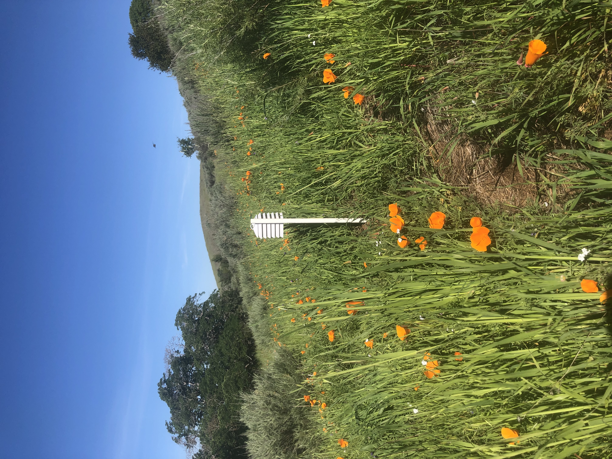
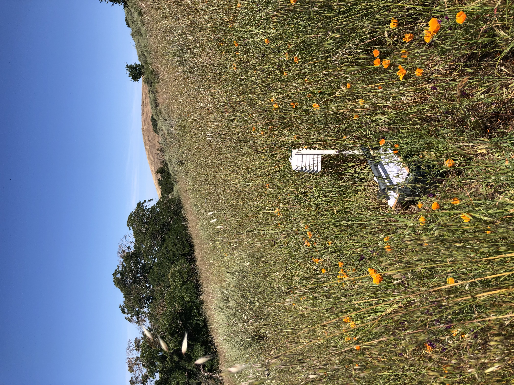
Microclimate was recorded during the study period using a temperature (°C) and relative humidity (%) sensor (Lascar EL-USB-2 data logger) housed in a solar radiation shield and placed 1 meter above the ground at the site coordinates. Air temperature and relative humidity were recorded every 30 minutes. Vapor pressure deficit (VPD; kPa)—a measure of the atmospheric demand for water from leaves and petals—was calculated from air temperature and relative humidity using the Arden Buck equation (Buck 1981). Some microclimate data were lost due to equipment malfunctions. Specifically, data were absent from the periods between February 14 – March 4, March 25 – April 8, and April 15 – April 22. To gap fill this missing microclimate data, PRISM minimum, mean, and maximum air temperature and VPD for our site coordinates were used to develop linear models between PRISM data and site microclimate data (PRISM Group 2025). These linear models were used to predict daily minimum, mean, and maxiumum VPD and air temperature during the time series gaps in the sensor data (see Supplemental Figure S1 and Supplemental Table S1).
Flower measurements
We measured petal traits between 9:00 am and 2:00 pm PST during peak daytime temperatures when flowers were open. To evaluate the relationship between seasonal climate and reproductive water cost in E. californica, we recorded three different floral water use traits in the field—petal surface conductance (gs), petal area, and petal water content. We also recorded the number of flowers produced by 20 E. californica plants at the Mount Diablo study site to provide insight into whole plant reproductive investment. Between February 25th and March 18th, we selected adult plants within 15 m of the site coordinates. Selected plants were spaced at least 5 m apart to ensure an even distribution of plants across the study plot. We marked each plant with blue flagging tape tied loosely around the central stem, and we drove a small stake into the ground adjacent to the plant to use as a backup marker. Only flowering plants were chosen to eliminate non-reproducing individuals. As such, flower counts likely overestimate the mean flower production from the total population due to an unknown number of non-flowering plants. For the duration of the study period, we counted the flowers on each flagged plant once every 5 to 8 days. Flower pedicels were marked with indelible ink to avoid double counting. We did not count flowers that were open between field visits. Therefore, our flower counts are an underestimate of total flower production from the selected plants. On April 22nd after flower counts began to decline (Figure S2), the longest rosette leaves on the flagged E. californica were measured to determine plant radius (m). This data was then used to evaluate the influence of plant size on total individual flower production up to April 22nd.
We recorded the surface conductance to water vapor, gs (mmol m-2 s-1), from two undamaged petals of a fully-expanded flower on each flagged plant using a portable steady-state porometer (Model LI-600, LI-COR Environmental, Lincoln, NE, USA). Petal surface conductance was measured on both the adaxial and abaxial surfaces (gs, adaxial and gs, abaxial, respectively). Values for gs, abaxial and gs, adaxial from individual flowers were added together to get total petal surface conductance (gs, total). Low rates of water loss can be hard to resolve given the ± 2% accuracy of the relative humidity sensors and ± 0.5 °C accuracy for surface temperature measurements of the LI-600 (LI-COR 2026). To correct for instrument accuracy, we set any negative gs, adaxial and gs, abaxial values to 0 mmol m-2 s-1. Out of 1842 gs, adaxial and gs, abaxial values, 442 were less than 0 mmol m-2 s-1. Previous research monitoring the change in the fresh mass of detached petals through time has shown that gs, total for E. californica is around 11.3 mmol m-2 s-1 (Roddy et al. 2023). In light of this information, we eliminated gs, total values greater than 25 mmol m-2s-1, which is twice the previously reported values for E. californica. Out of 921 measurements of gs, total, 77 values were greater than 25 mmol m-2s-1. These anomolous readings were likely due to damaged petal surfaces or residual petal surface moisture from dew. 76 measurements of gs, total were 0 mmol m-2 s-1, meaning the gs, adaxial and gs, abaxial values were both negative. These were also excluded, as it is highly unlikely for living petal tissue to have negative gs, total. Altogether, this left us with a sample size of 768 gs, total measurements.
Petal projected area (Apetal; m2) and absolute petal water content (Wabsolute; mg) were evaluated on 20 additional E. californica plants each week when possible. Five individuals were sampled at the study site on February 25th, 10 were sampled on March 4th, and 14 on March 11th. Fewer plants were observed flowering in late February and early March. As such, initial sample sizes for flower measurements taken earlier in the season were small, but they increased with time. Plants were initially selected haphazardly and then randomly chosen on a 30 m x 30 m grid centered at the site coordinates after May 5th. We excluded flagged plants from petal collection to prevent damage that may have impacted floral output. Before petal excision, the gs, adaxial and gs, abaxial of the flower were measured in the previously described manner. One flower petal was harvested per plant. Each petal was sealed in a plastic bag alongside a moist paper towel in an ice chest before transportation to the laboratory. On the same day, excised petals were carefully unfolded and photographed on a white sheet to assess their projected area (Schneider et al. 2012). To minimize the amount of flower material removed from the E. californica population at Mt. Diablo, Apetal values were multiplied by 4 to estimate total open flower projected area (Aflower). After scanning for Apetal, we weighed the harvested petals to obtain their fresh mass before oven-drying them at 70 °C for at least 48 hours to obtain their dry mass. These were used to compute Wabsolute (fresh mass – dry mass).
Greenhouse study
We performed a greenhouse study between September 2025 and January 2026 to investigate the effect of ontogeny on flower size. We collected seed from multiple plants on the Mount Diablo study plot between the months of May and June. We adapted our germination methods from those used by Montalvo et al. (2002). Seeds were placed in petri dishes between two filter papers and wetted with 2 ml of water. The seeds were subjected to cold stratification in a 6—8 °C refrigerator. Petri dishes were checked every few days, and remoistened with 2 ml of water if the filter paper was dry. We observed germination after 21 days. All seeds were promptly transplanted to 11.5-L pots in the greenhouse at San Francisco State University.
We grew 12 plants in sandy loam with added organic matter. Plants were under natural light supplemented with 15 hours of overhead lighting to induce flowering and accelerate growth (Sharma and Nanda 1976). For the temperature range, we chose to approximate springtime conditions at the Mount Diablo field site. Daytime temperatures were regulated between 16—24 °C, whereas nighttime temperatures were maintained between 4—10 °C. Relative humidity was allowed to fluctuate with the exterior climate. We placed a temperature and relative humidity sensor (Lascar EL-USB-2 data logger) approximately 1 meter above the growing table to monitor greenhouse air temperature and VPD. To ensure plants were well-watered, we initially watered every 3 to 4 days until the top 5 cm of soil in each pot was wet to touch. We eventually found it necessary to increase watering frequency over time to accommodate growing plant size. As such, an automatic irrigation system was built on December 17th, after which plants were watered for 5 minutes once every 24 hours.
We began floral measurements when flowering was observed after 5 weeks of growth. The week when flowering began for each individual plant was recorded, and floral measurements were made every 5 to 8 days. Values for gs, total, Apetal, and Wabsolute were measured with the same methods described previously, but with one difference. We measured the gs, adaxialand gs, abaxial of three flowers per plant, including the collected flower petal. After determining gs, total for each flower, we calculated mean gs, total for each plant per week.
Whole flower water use
Whole flower midday water use (Eflower;mmol s-1) was calculated as the ratio of mean midday vapor pressure deficit (VPDmidday; kPa) per standard atmospheric pressure (101.3 kPa) multiplied by total petal surface conductance (gs, total; mmol m-2 s-1) and open flower projected area (Aflower; m2).
E \scriptstyle flower = \frac{VPD midday}{101.3} ∗ g \scriptstyle s, total ∗ A \scriptstyle flower
As E. californica flowers close at night, we chose midday as our window of time to ensure that our model accounted for nyctinasty (Simonin et al., pending publication). We defined midday as the 2-hour duration between 11:00 am and 1:00 pm PST. Mean VPD was calculated for the midday time duration from the available field sensor data. Midday VPD data were missing from March 25 and April 15, so we used values from the day prior because they were the best approximates according to regional weather records (PRISM Group 2025, Figure 2). Due to the lack of wind speed data, we ignored surface boundary layer conditions in our flower water loss model.
Statistical methods
All statistical analyses were performed in R (v4.4.1; R Core Team 2024). We used two separate one-way analysis of variance (ANOVA) with the stats package to test whether Apetal and Wabsolute differed among weekly sampling periods during the seasonal transition from spring to summer. We visualized and tested ANOVA model residuals using Q-Q plots, the Shapiro-Wilk normality test, and Bartlett’s test for homoscedasticity. The data for Apetal and Wabsolute were log10-transformed when necessary, so that model assumptions were met. For traits exhibiting significant differences among weeks (p < 0.05), we used the Tukey HSD test to make pairwise comparisons between each weekly batch of flower petals. The coefficients of determination (r2) were calculated by dividing the group sum of squares by the total sum of squares. The p-values were derived from the F-distribution.
To test for relationships between seasonal climate and floral water use traits, we fit linear regression models using flower trait as the dependent variable and a measure of climate as the independent variable. We first looked at two separate regressions with Apetal and Wabsolute as functions of maximum VPD (VPDmax). The data for Apetal, Wabsolute, and VPDmax were log10-transformed for these models, but in the figures the data were plotted in arithmetic space with the regression lines appropriately transformed. We calculated mean VPDmax across a 10-day period prior to petal collection. Research into E. californica morphogenesis suggests that a 10-day window is appropriate considering the duration of bud development, when flower growth rate variation is pronounced (Becker et al. 2005). We also looked at three separate regressions of gs, total as it related to mean midday temperature, mean midday VPD, and week. To account for non-independence in repeat gs, total measurements taken from flagged plants, we used the lme4 package to fit linear mixed effect models (LMMs) with plant as the random effect (Bates et al. 2015). P-values were derived from LMMs using the lmerTest package (Kuznetsova et al. 2017). We applied linear regressions for non-repeat measurements. Additionally, we used linear regressions to analyze whole flower midday water use against Apetal, mean midday VPD, and week. We also used a multiple linear regression (MLR) to test how Apetal and mean midday VPD together predict whole flower midday water use.
We constructed additional models to further describe E. californica reproductive physiology. To test for a relationship between plant size and flower production, we fit a linear regression model using the sum total number of flowers produced by flagged plants by April 22nd as the dependent variable and plant radius as the independent variable. Linear regression was also used to test the scaling relationship between Wabsolute and Apetal. To test whether water content per dry mass (Wmass, g g-1) was changing with petal size, we used linear regression to analyze the scaling relationship of Wmass and Apetal. We log10-transformed all data for these regressions, but we visualized the petal data in arithmetic space with the regression lines transformed accordingly.
We analyzed the greenhouse data with linear mixed effects models to account for non-independence caused by repeated sampling across individual plants (Muhammad 2023). We tested how week of flowering predicted Apetal, Wabsolute, and gs, total using plant as the random effect. To assess if response variables met model assumptions, we used the Shapiro-Wilk test and Q-Q plots to determine that the residuals were normally distributed. Estimated marginal means with Tukey adjustment were used to make pairwise comparisons between sampling periods. This was done with the emmeans package (Lenth 2023).
Results
Climate
Air temperature and VPD increased over the bloom period (February 25 to July 2) at Mount Diablo (Figure 2A, 2C). In March, average daily temperatures were 12.0 ± 2.84 °C, with mean VPD of 0.527 ± 0.248 kPa. By June, average daily temperatures and VPD were 22.7 ± 3.21 °C and 2.16 ± 0.742 kPa, respectively. Greenhouse climate approximated mean conditions recorded in the field during late March – early April. Average temperatures and VPD across the entire greenhouse study were 17.2 ± 1.73 °C and 0.582 ± 0.158 kPa (Figure 2B, 2D).
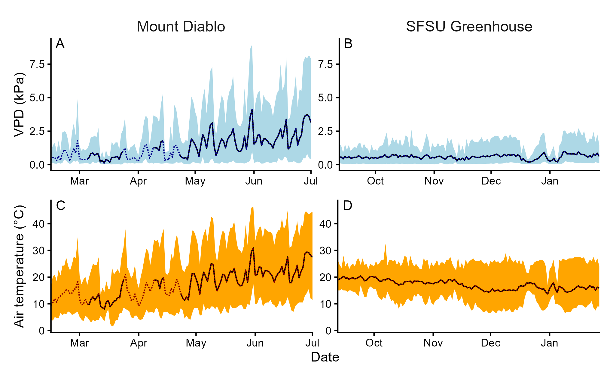
Petal area and water content
Both Apetal and Wabsolute differed significantly amongst weekly samples at the Mount Diablo field site (Figure 3A and 3C, p < 0.0001). According to Tukey HSD comparisons, petals collected before April 15—the 8th week of the field study—were distinct from any observed after week 10 on April 29 (p < 0.0001). Mean Apetal between February 25 and April 3 (week 1–6, n = 89) was 10.2 ± 3.26 cm2, and mean Wabsolutewas 91.4 ± 32.5 mg. From May 6 to June 25 (week 11–18, n = 140), mean Apetal was 2.72 ± 0.942 cm2, and mean Wabsolutewas 17.2 ± 7.17 mg. Petals collected on April 15 and April 29 (week 8 and 10, n = 40) were transitional, with intermediate size and water content (Apetal = 6.26 ± 2.28 cm2, Wabsolute = 47.2 ± 21.7 mg). Tukey HSD comparisons indicated that these transitional petals differed from both early and late-season petals for both traits (each p < 0.0001). Apetal and Wabsolute negatively declined with 10-day mean VPDmax (Figure 4). The relationships were modeled as log10Apetal = -1.22 ∙ log10VPDmax + 1.25 (r2 = 0.73, p < 0.0001) and log10Wabsolute = -1.55 ∙ log10VPDmax + 2.27 (r2 = 0.77, p < 0.0001).
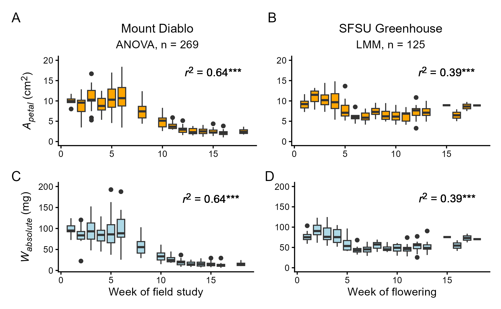
Apetal and Wabsolute varied significantly when observed over the course of development in a greenhouse setting (Figure 3B and 3D, p < 0.0001). Petals were largest during weeks 1–3 of flowering (n = 36). Mean Apetal was 10.2 ± 1.87 cm2 and mean Wabsolute was 83.9 ± 18.7 mg. By weeks 6–18 of flowering (n = 65), both of the means for Apetal and Wabsolute had reduced (p<0.0001) to 6.80 ± 1.65 cm2 and 51.0 ± 13.9 mg, respectively. Flowers were transitional during weeks 4 and 5 (n = 24). They were distinct from weeks 6 – 18 in size (Apetal = 8.82 ± 2.70 cm2, p < 0.0001) and water content (Wabsolute = 67.6 ± 20.4 mg, p < 0.0001), but the comparison to earlier weeks was weaker (Apetal, p = 0.0045; Wabsolute, p = 0.0001).
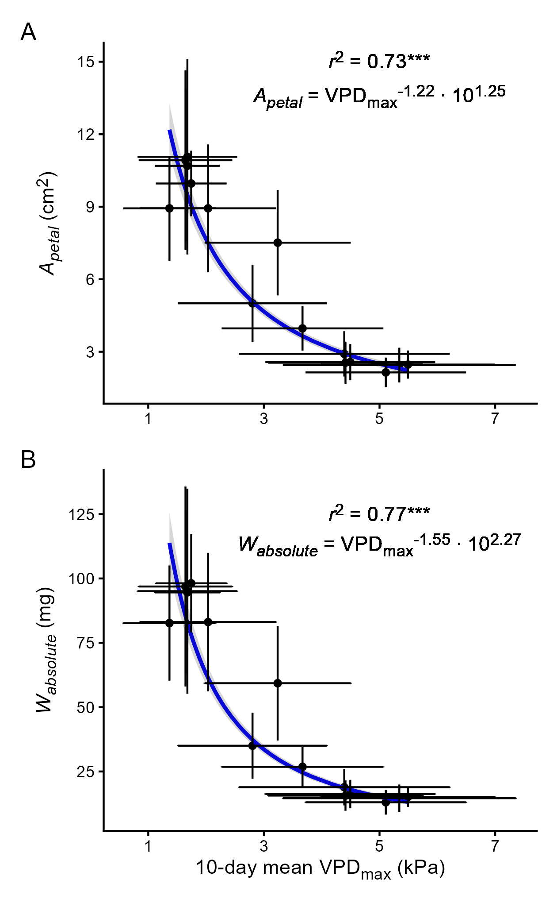
Petal surface conductance and whole flower water use
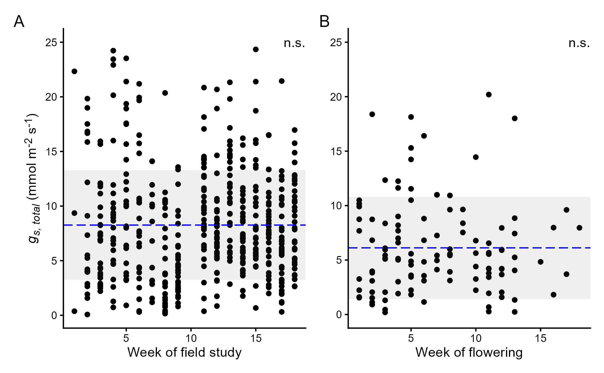
In contrast to Apetal and Wabsolute, gs, total did not significantly change over the course of time or development. Figure 5A demonstrates that there was no relationship between week and gs, totalat Mount Diablo across the observation period (mean gs, total = 8.26 ± 5.01 mmol m-2 s-1). Likewise, gs, total did not vary significantly across development in greenhouse plants (Figure 5B, mean gs, total = 6.12 ± 4.69 mmol m-2 s-1). Furthermore, mean gs, total in E. californica flowers at Mount Diablo was unresponsive to mean midday VPD and air temperature (Figure 6).
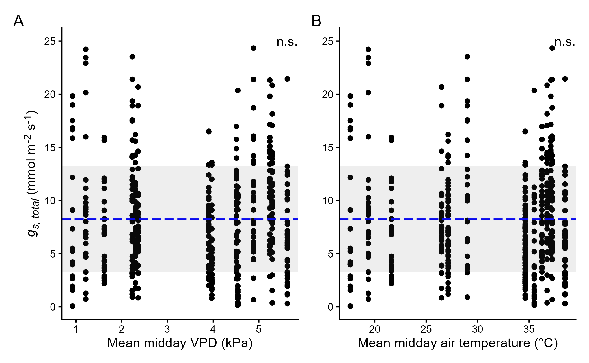
When we modeled whole flower midday water use, the combination of increasing VPD, decreasing Apetal, and stable gs, totalmeant that Eflower remained relatively steady across the seasons at Mount Diablo (Figure 7A; Eflower = -1.50 × 10-5t + 6.78 × 10-4, r2 = 0.03, p = 0.019). Eflower was weakly but positively related to VPD (Figure 7B; Eflower = 8.15 × 10-5VPDmidday + 2.22 × 10-4, r2 = 0.09, p < 0.0001). Eflower was positively related to Apetal, but this relationship was also weak (Figure 7C; Eflower = 4.15 × 10-5Apetal + 3.08 × 10-4, r2 = 0.13, p < 0.0001). A multiple linear regression with Apetaland VPDmidday as predictors for Eflower was the best fitting model (Eflower = 7.57 × 10-5Apetal + 1.68 × 10-4VPDmidday - 4.52 × 10-4, r2 = 0.42, p < 0.0001).
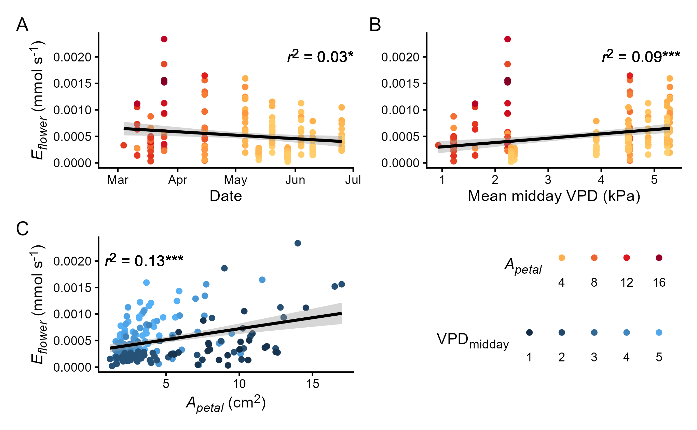
Whole plant flower production and petal scaling relationships
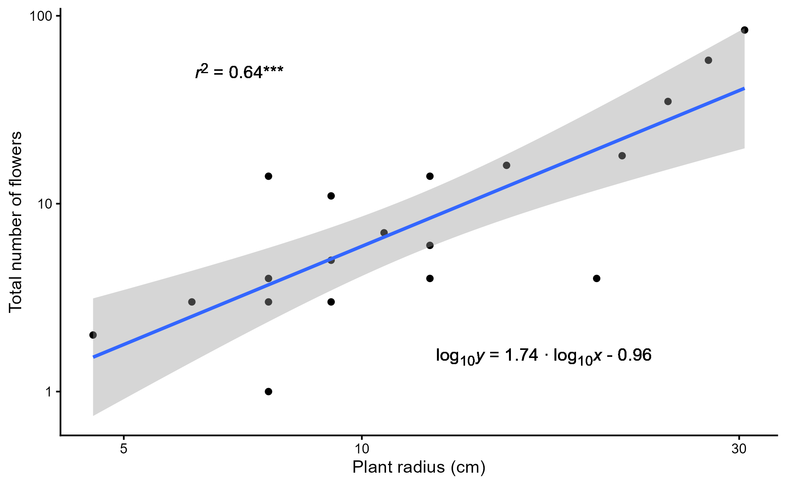
According to flower count surveys, peak flowering at Mount Diablo was observed on April 8 (Supplemental Figure S2). The flagged plants bloomed seldomly in the months of May and June. Plant radius positively related with the total number of flowers produced by each individual by April 22(Figure 8, log10y = 1.74 ∙ log10x - 0.96, r2 = 0.64, p < 0.0001).
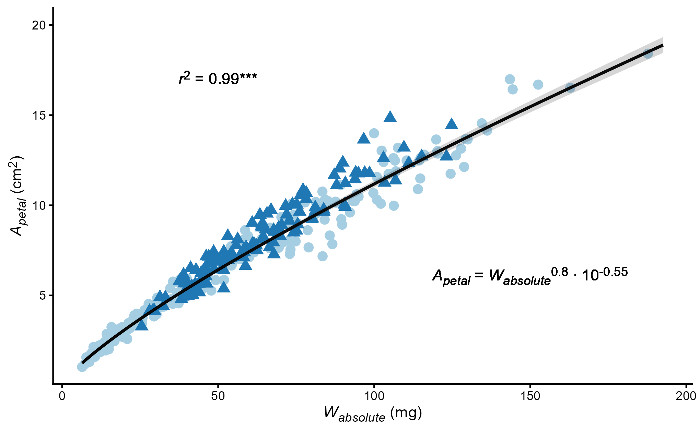
Apetal at Mount Diablo was strongly predicted by Wabsolute in a positive relationship (Figure 9, log10Apetal = 0.8 ∙ log10Wabsolute - 0.55, r2 = 0.99, p < 0.0001). Likewise, there was a significant, non-isometric relationship between Wmass and Apetal, explained by a positive slope (Figure 10, log10Wmass = 0.22 ∙ log10Apetal + 0.66, r2 = 0.67, p < 0.0001). Data from greenhouse petals were not used in the regression analysis, but they were included in the figures for the purpose of comparison.
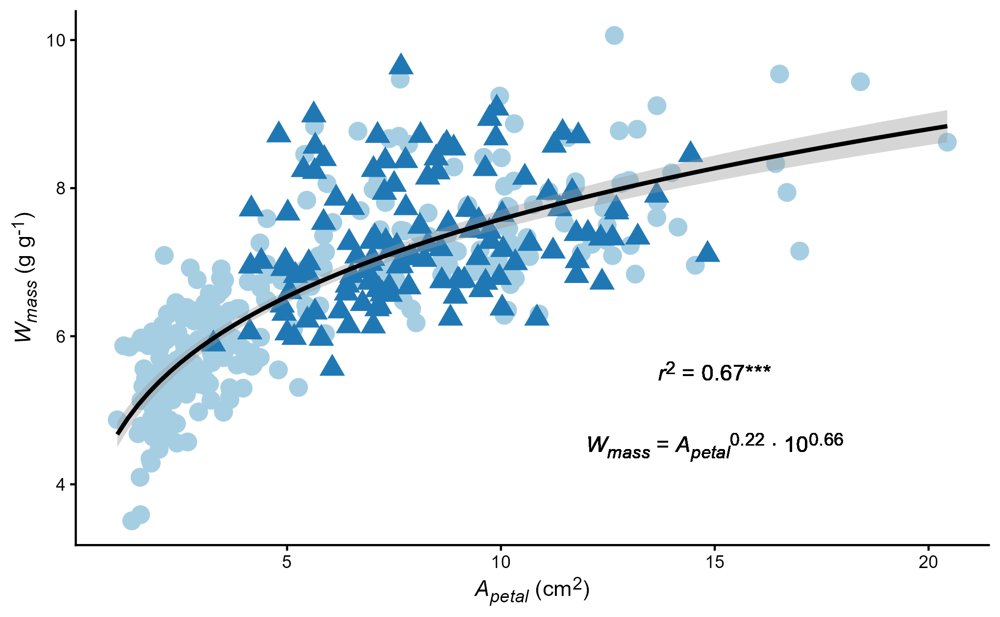
Discussion
It is now well recognized that decreasing water availability can have significant impacts on floral traits involved with pollinator attraction, such as petal size (Galen 1999; Kuppler and Kotowska 2021; Powers et al. 2022). One reason for this is that flowers require a significant water investment due to their relatively high water content per unit dry mass as compared to leaves (Roddy et al. 2023). The water cost of constructing and maintaining flowers is expected to vary greatly for plants with a long bloom period that span distinct wet and dry periods, like Eschscholzia californica (Teixido and Valladares 2014; Greenhouse et al. 2012). Here we show that changes in floral water cost over a 4-month bloom period for E. californica are influenced by a combination of ontogeny and phenotypic plasticity.
Ontogenetic shifts in the water cost of flowering
We tested for ontogenetic changes in the construction and maintenance cost of flowering by growing E. californica from seed under stable environmental conditions that imitated the springtime conditions of the parent population from Mount Diablo (Figure 2). Over an 18-week period the absolute water content of flower petals (Wabsolute) decreased by 39%, primarily driven by a 33% decrease in Apetal. Greenhouse petals decreased from an average 10.2 cm2 and 83.9 mg of water to 6.8 cm2 and 51 mg (Figure 3B and 3D). Although a small decrease was observed in Apetal, we observed no change in petal gs over the 18-week period of development (Figure 5B). Taken together, it seems ontogeny influenced the water cost of flowering by changing Apetal, but there were apparently no developmental changes in petal gs.
Phenotypic plasticity in the water cost of flowering
Apetal in wild plants decreased 73% over the monitored 18-week period at Mount Diablo, and Wabsolute at the field site reduced by 81% (Figure 3A, 3C). Wild flowers produced at the beginning of the bloom period were similar in size to those made by greenhouse plants (10.2 cm2 and 91.4 mg of water), but in the final weeks Apetal and Wabsolute at Mount Diablo decreased to 2.7 cm2 and 17.2 mg. The divergence between wild and cultivated plants implies that investment in flowering responded to water availability, as seen in other species (Zhou et al. 2025; Lambrecht et al. 2017; Caruso 2006). While we did not measure soil water availability at our field site, weather records at Diablo Junction indicate that total precipitation was 9 mm in May and 0 mm in June of 2025 (NOAA 2026). The accompaniment of elevated vapor pressure deficit meant that the soil was likely severely water limited later in the bloom period of the wild plants. This would explain why flower size in wild Mount Diablo E. californica was responsive to climate, with both Apetal and Wabsolute negatively correlated with increasing atmospheric demand for water (Figure 4). Wild plants were exposed to a much drier environment than their counterparts grown in the greenhouse, and the lack of soil water likely drove a greater reduction in petal size.
Shrinking cell size could be the mechanism behind flower size plasticity in E. californica. The positive relationship between Wmass and Apetal demonstrates that petal anatomy was changing alongside size (Figure 10). The reduction in the proportion of water to dry mass implies a decreased fraction of symplastic volume compared to apoplast volume in small petals. This could be achieved by either increased cell wall thickness or decreased cell size. Research on grass leaves has shown that symplastic volume scaled positively with water content per fresh mass (\frac{fresh mass - dry mass}{freshmass} = \frac{W\scriptstyle mass}{W\scriptstyle mass + 1}), providing support for cell size as likely responsible for changes in petal size (Garnier and Laurent 1994). Galen et al. (1999) suggested that cell size is functionally related to corolla size in Polemonium viscosum flowers, and that most change in flower size across development involves hydraulic cell expansion. Decreasing cell size can also occur with increasing cell wall thickness, which is advantageous when water becomes limiting to help maintain biomechanical structure at lower water potentials (Cutler et al. 1977). We hypothesize that changing cell size underlies changing E. californica petal composition, but microscopic imaging is required to confirm this claim.
The interaction of petal size and floral water use
Eschscholzia californica was capable of regulating the total water allocation to flowering by changing flower size but not through changes in petal surface conductance (Figure 5 and Figure 6). This is likely due to the fact that California poppies lack stomata on these particular organs (Becker et al. 2005). When evaluating the influence of petal size on the water construction cost of producing flowers, we observed strong non-isometric scaling between Apetal and Wabsolute (Figure 9, coefficient = 0.8), suggesting a diminishing return on flower size with increased water allocation toward flowering. In other words, building a few large flowers results in a greater water construction cost than multiple small blossoms. For example, for a total floral display of 80 cm2, two 40 cm2 flowers would cost ~ 650 mg whereas four 20 cm2 flowers would cost ~ 576 mg of water (Figure 9, see equation). In contrast, because there was no relationship between Apetal and gs, the influence of petal size on the maintenance cost of flowering is ultimately dependent upon the total number of flowers produced and VPD (Figure 7C).
Previous research has shown strong variation in petal gs in response to changes in air temperature (Aun et al. 2024). However, our field observations showed no impact of air temperature on gs over the bloom period. Since there was no relationship between air temperature and gs, it is likely that the observed wild poppies did not experience temperatures high enough to induce changes in cuticle structure that lead to increases in gs (Aun et al. 2024). The warmest field day at Mount Diablo was June 25, 2025. According to sensor data, the maximum air temperature was 39.5 °C, just shy of the range of temperatures known to trigger the aforementioned phase transition in the cuticle membrane for some plant species (Schreiber and Schönherr 1990). A reduction in petal surface conductance due to thickening the cuticle is unlikely for this species, as gs is important for the cooling of epidermal tissue by latent heat exchange. Such a response to increasing temperatures could run the risk of overheating (Nobel 2009).
While water loss from flower petals slightly decreased over time at Mount Diablo (Figure 7), the relationship between Eflower and sampling week was weakly correlated because floral water use was ultimately controlled by both size and vapor pressure deficit (MLR, r2 = 0.42). Reducing flower size served to stabilize the water maintenance cost of floral display over the bloom period, as shown by the low correlation between water loss and size (Figure 7C, r2 = 0.13). At greater VPD, the largest flowers seen in early spring were likely vulnerable to losing more water to the atmosphere than smaller flowers. However, we did not observe this phenomenon because daytime VPD during the month of March was below 3 kPa (Figure 2).
Insight into whole plant reproductive water investment
Flower count data indicate that poppy plants tended to produce a greater number of flowers in late March and early April, when they were also apt to produce large petals (Supplemental Figure S2). Pollinators may be attracted to large floral displays, which would suggest a mechanism for high flower production with bigger petals when water was plentiful (Rowe et al. 2020; Gervasi and Schiestl 2017; Teixido et al. 2016). Bigger plants produced disproportionately more flowers by April 22nd (Figure 8, slope = 1.74). These large plants could be older individuals that were recruited during prior growing seasons, as the E. californica population at Mount Diablo likely contains perennials (Cook 1962).
Conclusion
Eschscholzia californica is an emerging model organism with the potential for synthesizing scientific inquiry across different fields in plant biology (Becker et al. 2023). Here, we use California poppies to observe how plant development intersects with physiology in a natural environment. We support our interpretations with comparisons to plants grown in a greenhouse. Our integration here yielded insights into how E. californica reproduction responds to a seasonally drying climate. Results like these provide relevant context for conservation biologists when planning for future drying trends caused by climate change.
During March 2026, a year after we completed this field study, the Diablo Junction weather station recorded just 1 mm total precipitation, down from the period of record average of 86 mm. (NOAA 2026; Western Regional Climate Center 2026). Air temperatures were also elevated to a monthly average maximum of 23 °C, a 53% increase from previous years. Our research suggests that California poppies may be capable of responding to unseasonal droughts of this sort by producing smaller flowers. While reduction in flower size may acommpany a reduction in fitness (Supplemental Figure S2, Ryan and Cleland 2021), recent advances suggest non-adaptive plasticity could assist long-term species survival and enhance directional evolutionary change (Ghalambor et al. 2015; Velotta et al. 2018; Leonard and Lancaster 2020; Campbell-Staton et al. 2021). Our results show that flowers produced later in the season were smaller, contained less water, and lost less water to the atmosphere than large flowers. In increasingly water-limited landscapes, reducing floral water cost could affect whether plants maintain reproduction through drought or abandon flowering altogether.
References
An Y-D, Roddy AB, Zhang T-H, Jiang G-F. 2023. Hydraulic differences between flowers and leaves are driven primarily by pressure-volume traits and water loss. Frontiers in Plant Science 14: 1130724.
Anic V, Henríquez CA, Abades SR, Bustamante RO. 2015. Number of conspecifics and reproduction in the invasive plant Eschscholzia californica (Papaveraceae): is there a pollinator‐mediated Allee effect? Plant Biology 17: 720–727.
Ashman T-L, Schoen DJ. 1994. How long should flowers live? Nature 371: 788–791.
Aun MA, Farnese F, Loram‐Lourenço L, et al. 2024. Evidence of combined flower thermal and drought vulnerabilities portends reproductive failure under hotter‐drought conditions. Plant, Cell & Environment 47: 1971–1986.
Bates D, Mächler M, Bolker B, Walker S. 2015. Fitting Linear Mixed-Effects Models Using lme4. Journal of Statistical Software 67: 1–48.
Becker A, Gleissberg S, Smyth DR. 2005. Floral and Vegetative Morphogenesis in California Poppy (Eschscholzia californica Cham.). International Journal of Plant Sciences 166: 537–555.
Becker A, Yamada Y, Sato F. 2023. California poppy (Eschscholzia californica), the Papaveraceae golden girl model organism for evodevo and specialized metabolism. Frontiers in Plant Science 14: 1084358.
Bell G. 1985. On the function of flowers. Proceedings of the Royal Society of London. B. Biological Sciences 224: 223–265.
Bonser SP. 2021. Misinterpreting the adaptive value of phenotypic plasticity in studies on plant adaptation to new and variable environments. Plant Biology 23: 683–685.
Bourbia I, Carins‐Murphy MR, Gracie A, Brodribb TJ. 2020. Xylem cavitation isolates leaky flowers during water stress in pyrethrum. New Phytologist 227: 146–155.
Buck AL. 1981. New Equations for Computing Vapor Pressure and Enhancement Factor. Journal of Applied Meteorology and Climatology 20: 1527–1532.
Bustamante RO, Durán AP, Peña-Gómez FT, Véliz D. 2017. Genetic and phenotypic variation, dispersal limitation and reproductive success in the invasive herb Eschscholzia californica along an elevation gradient in central Chile. Plant Ecology & Diversity 10: 419–429.
Campbell-Staton SC, Velotta JP, Winchell KM. 2021. Selection on adaptive and maladaptive gene expression plasticity during thermal adaptation to urban heat islands. Nature Communications 12: 6195.
Carins-Murphy MR, Cochard H, Deans RM, Gracie AJ, Brodribb TJ. 2023. Combined heat and water stress leads to local xylem failure and tissue damage in pyrethrum flowers. Plant Physiology 193: 356–370.
Caruso CM. 2006. Plasticity of inflorescence traits in Lobelia siphilitica (Lobeliaceae) in response to soil water availability. American Journal of Botany 93: 531–538.
Caruso CM, Eisen KE, Martin RA, Sletvold N. 2019. A meta‐analysis of the agents of selection on floral traits. Evolution 73: 4–14.
Cook SA. 1962. Genetic System, Variation, and Adaptation in Eschscholzia californica. Evolution 16: 278–299.
Cutler JM, Rains DW, Loomis RS. 1977. The Importance of Cell Size in the Water Relations of Plants. Physiologia Plantarum 40: 255–260.
Dai A. 2013. Increasing drought under global warming in observations and models. Nature Climate Change 3: 52–58.
Diggle PK. 1997. Ontogenetic Contingency and Floral Morphology: The Effects of Architecture and Resource Limitation. International Journal of Plant Sciences 158: S99–S107.
Feild TS, Chatelet DS, Brodribb TJ. 2009. Giant flowers of Southern magnolia are hydrated by the xylem. Plant Physiology 150: 1587–1597.
Galen C. 1999. Why Do Flowers Vary? BioScience 49: 631–640.
Galen C, Sherry RA, Carroll AB. 1999. Are flowers physiological sinks or faucets? Costs and correlates of water use by flowers of Polemonium viscosum. Oecologia 118: 461–470.
Gallagher MK, Campbell DR. 2017. Shifts in water availability mediate plant–pollinator interactions. New Phytologist 215: 792–802.
Garnier E, Laurent G. 1994. Leaf anatomy, specific mass and water content in congeneric annual and perennial grass species. New Phytologist 128: 725–736.
Gervasi DDL, Schiestl FP. 2017. Real-time divergent evolution in plants driven by pollinators. Nature Communications 8: 14691.
Ghalambor CK, Hoke KL, Ruell EW, Fischer EK, Reznick DN, Hughes KA. 2015. Non-adaptive plasticity potentiates rapid adaptive evolution of gene expression in nature. Nature 525: 372–375.
Greenhouse J, Markos S, Moe RL, Simono S, Wetherwax M, Vorobik LA. 2012. The Digital Jepson Manual: Vascular Plants of California, Second Edition, Thoroughly Revised and Expanded. University of California Press.
Höfer RJ, Lindner T, Ayasse M, Kuppler J. 2023. Reduced seed set under water deficit is driven mainly by reduced flower numbers and not by changes in flower visitations and pollination. Functional Ecology 37: 461–471.
Hutton D, Game JC, Ludwig KF, Jauregui-Lazo J, Tan BC. 2021. A Bryophyte Inventory of Mount Diablo, Contra Costa County, California. Madroño 68.
IPCC. 2023. Summary for policymakers. In: Climate change 2023: synthesis report. A report of the intergovernmental panel on climate change. Contribution of working groups I, II and III to the sixth assessment report of the intergovernmental panel on climate change [Core Writing Team].
Kuppler J, Kotowska MM. 2021. A meta‐analysis of responses in floral traits and flower–visitor interactions to water deficit. Global Change Biology 27: 3095–3108.
Kuznetsova A, Brockhoff PB, Christensen RHB. 2017. lmerTest Package: Tests in Linear Mixed Effects Models. Journal of Statistical Software 82: 1–26.
Lambrecht SC. 2013. Floral Water Costs and Size Variation in the Highly Selfing Leptosiphon bicolor (Polemoniaceae). International Journal of Plant Sciences 174: 74–84.
Lambrecht SC, Dawson TE. 2007. Correlated variation of floral and leaf traits along a moisture availability gradient. Oecologia 151: 574–583.
Lambrecht SC, Morrow A, Hussey R. 2017. Variation in and adaptive plasticity of flower size and drought-coping traits. Plant Ecology 218: 647–660.
Leger EA, Rice KJ. 2003. Invasive California poppies (Eschscholzia californica Cham.) grow larger than native individuals under reduced competition. Ecology Letters 6: 257–264.
Lenth R. 2023. emmeans: Estimated Marginal Means, aka Least-Squares Means. R package version 1.8.5.
Leonard AM, Lancaster LT. 2020. Maladaptive plasticity facilitates evolution of thermal tolerance during an experimental range shift. BMC Evolutionary Biology 20: 47.
LI-COR. 2026. LI-600 | Operating Instructions. https://www.licor.com/support/LI-600/manuals.html. 6 May 2026.
Lipayeva L. 1989. On the anatomy of petals in angiosperms. Botanicheskii Zhurnal 74: 826–830.
Matesanz S, Gianoli E, Valladares F. 2010. Global change and the evolution of phenotypic plasticity in plants. Annals of the New York Academy of Sciences 1206: 35–55.
Montalvo AM, Feist-Alvey LJ, Koehler CE. 2002. The effect of fire and cold treatments on seed germination of annual and perennial populations of Eschscholzia californica (Papaveraceae) in Southern California. Madroño 49: 207–227.
Muhammad LN. 2023. Guidelines for repeated measures statistical analysis approaches with basic science research considerations. The Journal of Clinical Investigation 133: e171058.
Nattero J, Cocucci AA, Medel R. 2010. Pollinator‐mediated selection in a specialized pollination system: matches and mismatches across populations. Journal of Evolutionary Biology 23: 1957–1968.
NOAA. 2026. Daily Summaries Station Details: Mount Diablo Junction. https://www.ncdc.noaa.gov/cdo-web/datasets/GHCND/stations/GHCND:USC00045915/detail. 30 Mar. 2026.
Nobel PS. 2009. Physicochemical and Environmental Plant Physiology. Academic Press.
Paiva DC, Roddy AB. 2024. Flower longevity and size are coordinated with ecophysiological traits in a tropical montane ecosystem. New Phytologist 244: 344–350.
Pearson KD, Love NLR, Ramirez-Parada T, Mazer SJ, Yost JM. 2021. Phenological trends in the California poppy (Eschscholzia californica): digitized herbarium specimens reveal intraspecific variation in the sensitivity of flowering date to climate change. Madroño 68: 343–359.
Powers JM, Briggs HM, Dickson RG, Li X, Campbell DR. 2022. Earlier snow melt and reduced summer precipitation alter floral traits important to pollination. Global Change Biology 28: 323–339.
PRISM Group. 2025. PRISM Group at Oregon State University. https://prism.oregonstate.edu/explorer/. 31 Mar. 2026.
R Core Team. 2024. R: A language and environment for statistical computing. https://www.r-project.org/. 29 Apr. 2026.
Roddy AB, Brodersen CR, Dawson TE. 2016. Hydraulic conductance and the maintenance of water balance in flowers. Plant, Cell & Environment 39: 2123–2132.
Roddy AB, Guilliams CM, Fine PVA, Mambelli S, Dawson TE, Simonin KA. 2023. Flowers are leakier than leaves but cheaper to build. New Phytologist 239: 2076–2082.
Roddy AB, Jiang G, Cao K, Simonin KA, Brodersen CR. 2019. Hydraulic traits are more diverse in flowers than in leaves. New Phytologist 223: 193–203.
Roddy AB, Martínez‐Perez C, Teixido AL, et al. 2021. Towards the flower economics spectrum. New Phytologist 229: 665–672.
Roddy AB, Simonin KA, McCulloh KA, Brodersen CR, Dawson TE. 2018. Water relations of Calycanthus flowers: Hydraulic conductance, capacitance, and embolism resistance. Plant, Cell & Environment 41: 2250–2262.
Rowe L, Gibson D, Bahlai CA, Gibbs J, Landis DA, Isaacs R. 2020. Flower traits associated with the visitation patterns of bees. Oecologia 193: 511–522.
Ryan EM, Cleland EE. 2021. Clinal variation in phenological traits and fitness responses to drought across the native range of California poppy. Climate Change Ecology 2: 100021.
Schemske DW, Bradshaw HD. 1999. Pollinator preference and the evolution of floral traits in monkeyflowers (Mimulus). Proceedings of the National Academy of Sciences 96: 11910–11915.
Schneider CA, Rasband WS, Eliceiri KW. 2012. NIH Image to ImageJ: 25 years of image analysis. Nature Methods 9: 671–675.
Schreiber L, Schönherr J. 1990. Phase transitions and thermal expansion coefficients of plant cuticles: The effects of temperature on structure and function. Planta 182: 186–193.
Sharma R, Nanda KK. 1976. Effect of photoperiod on growth and development of Eschscholtzia californica Cham. Indian Journal of Plant Physiology 19: 202–206.
Strauss SY, Whittall JB. 2006. Non-pollinator agents of selection on floral traits In: Ecology and Evolution of Flowers. Oxford University Press, 120–138.
Teixido AL, Barrio M, Valladares F. 2016. Size Matters: Understanding the Conflict Faced by Large Flowers in Mediterranean Environments. The Botanical Review 82: 204–228.
Teixido AL, Valladares F. 2014. Disproportionate carbon and water maintenance costs of large corollas in hot Mediterranean ecosystems. Perspectives in Plant Ecology, Evolution and Systematics 16: 83–92.
Velotta JP, Ivy CM, Wolf CJ, Scott GR, Cheviron ZA. 2018. Maladaptive phenotypic plasticity in cardiac muscle growth is suppressed in high‐altitude deer mice. Evolution 72: 2712–2727.
Weiner J. 2004. Allocation, plasticity and allometry in plants. Perspectives in Plant Ecology, Evolution and Systematics 6: 207–215.
Western Regional Climate Center. 2026. Mount Diablo Junction Climate Summary. https://wrcc.dri.edu/cgi-bin/cliMAIN.pl?ca5915. 30 Mar. 2026.
Zhang F-P, Brodribb TJ. 2017. Are flowers vulnerable to xylem cavitation during drought? Proceedings of the Royal Society B: Biological Sciences 284: 20162642.
Zhang F, Carins Murphy MR, Cardoso AA, Jordan GJ, Brodribb TJ. 2018. Similar geometric rules govern the distribution of veins and stomata in petals, sepals and leaves. New Phytologist 219: 1224–1234.
Zhou Y, Meng Y-Y, Long Q-Y, Li J-W. 2025. Plasticity in Dendrobium floral structure and physiological response under different drought stress levels. Scientia Horticulturae 346: 114170.
Supplementary Figures and Tables
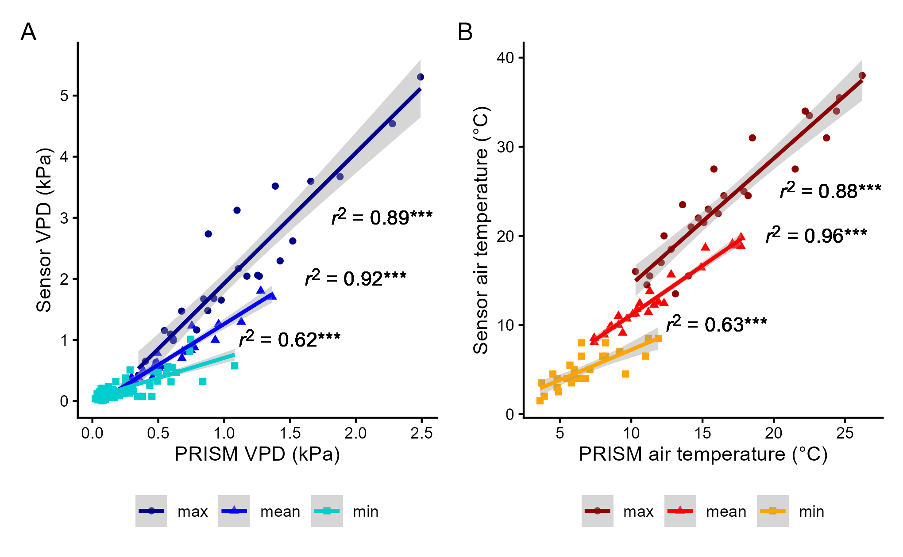
| Predicted metric | Linear model | p-value | r2 |
|---|---|---|---|
| Daily maximum VPD | y=2.14x – 0.216 | < 0.0001 | 0.89 |
| Daily mean VPD | y=1.34x – 0.079 | < 0.0001 | 0.92 |
| Daily minimum VPD | y=0.655x + 0.0512 | < 0.0001 | 0.62 |
| Daily maximum air temperature | y=1.42x + 0.372 | < 0.0001 | 0.88 |
| Daily mean air temperature | y=1.10x + 0.0896 | < 0.0001 | 0.96 |
| Daily minimum air temperature | y=0.678x + 0.440 | < 0.0001 | 0.63 |
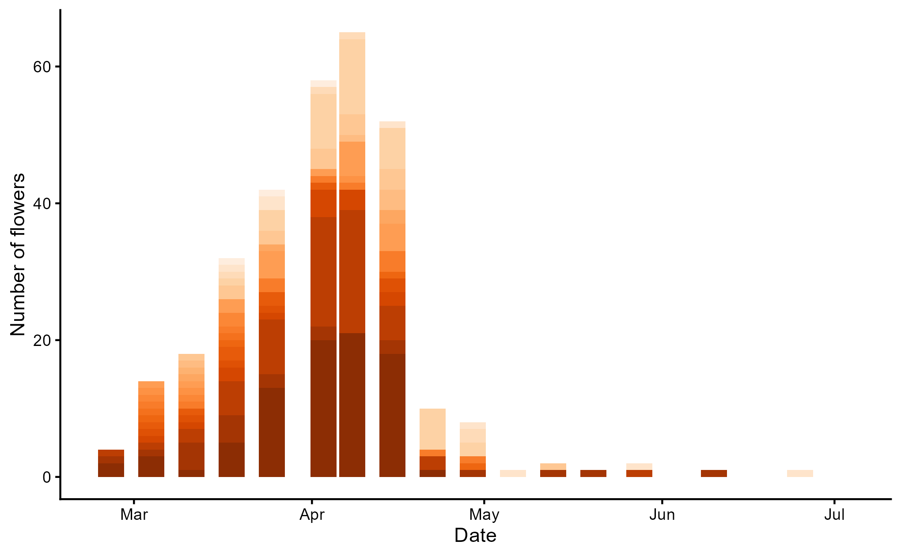